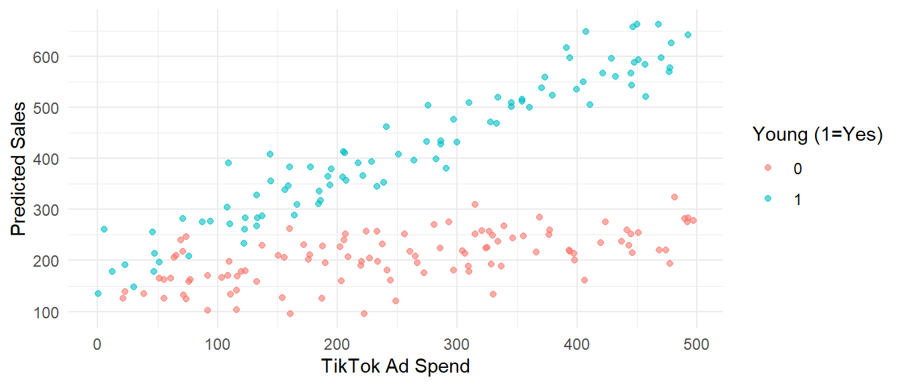
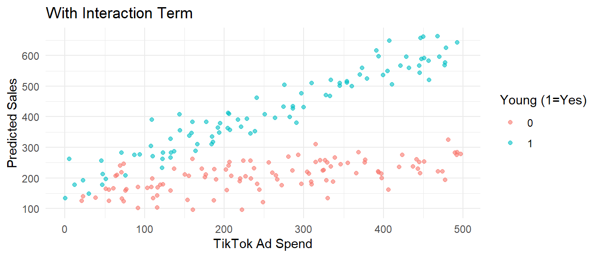

2 Multiple Linear Regression
2.1 Interactions in a Regression
2.1.1 Why Do We Ever Need an Interaction?
Suppose you’re working as a data analyst for a clothing brand that runs online campaigns through TikTok. Your job is to predict customer purchases based on how much was spent on tik tok ads—and whether they’re under 25.
You’ve collected data on 200 customers, including:
- How much money overall was spent son TikTok ads,
- Whether the customer is young (under 25),
- How much they ended up spending on your products.
Here is a quick look at the data:
| tiktok_ad_spend | young | sales |
|---|---|---|
| 143.78876 | 1 | 407.3623 |
| 394.15257 | 1 | 597.2338 |
| 204.48846 | 1 | 363.4338 |
| 441.50870 | 0 | 260.0295 |
| 470.23364 | 1 | 596.6367 |
| 22.77825 | 1 | 191.4505 |
Now let’s visualize the relationship between ad spending and sales:

We begin with estimating a simple linear model, estimating the effect of TikTok ad spending on purchases and the dummy for whether you are young:
\[ \text{Sales}_i = \beta_0 + \beta_1 \cdot \text{AdSpend}_i + \beta_2 \cdot \text{Young}_i + u_i \]
Here:
- \(\text{AdSpend}_i\) is the money spent on TikTok ads for individual \(i\),
- \(\text{Young}_i = 1\) if individual \(i\) is under 25, and 0 otherwise,
- \(\text{Sales}_i\) is the value of purchases made by individual \(i\).
This model assumes a common slope on ad spending for both young and old customers. One dollar more in ads on tik tok, would increase sales to young and old people by the same amount. That is, it assumes this marketing campaign is equally effective for both old and young people.
We estimate the model and we get the following:
##
## Call:
## lm(formula = sales ~ tiktok_ad_spend + young, data = data)
##
## Residuals:
## Min 1Q Median 3Q Max
## -141.883 -50.858 0.821 47.398 145.724
##
## Coefficients:
## Estimate Std. Error t value Pr(>|t|)
## (Intercept) 64.73544 10.12217 6.395 1.14e-09 ***
## tiktok_ad_spend 0.56359 0.03244 17.373 < 2e-16 ***
## young 208.29233 8.89550 23.415 < 2e-16 ***
## ---
## Signif. codes: 0 '***' 0.001 '**' 0.01 '*' 0.05 '.' 0.1 ' ' 1
##
## Residual standard error: 62.69 on 197 degrees of freedom
## Multiple R-squared: 0.8149, Adjusted R-squared: 0.813
## F-statistic: 433.7 on 2 and 197 DF, p-value: < 2.2e-16Interpretation:
- \(\beta_1\) is the estimated average increase in sales per dollar of ad spend among all customers. One dollar more in ads increases sales by 0.56.
- \(\beta_2\) is the average level difference between young and old. On average, young spend 208 dollars more than old.
But the graph reveals something important: the relationship between ad spending and purchases appears steeper for younger customers. In other words, the increase in purchases per extra dollar spent might be larger for them than for older consumers.
If both groups truly react differently to ads, then a single common slope is misleading. We should give each group its own slope to improve predictions. So how can we model that? How can we allow the effect of TikTok ads to vary depending on age?
2.1.2 2. Letting the Slope Vary by Age: Adding an Interaction
To allow the effect of TikTok ad spending to vary by age, we introduce an interaction term into our regression model. This term captures how the relationship between ad spending and sales changes depending on whether the customer is young.
Specifically, we define a new variable:
\[ \text{Interaction}_i = \text{AdSpend}_i \times \text{Young}_i \]
This variable is simply the product of TikTok ad spending and the dummy for being under 25. If a customer is not young (i.e., \(\text{Young}_i = 0\)), then the interaction term is always zero. If a customer is young (\(\text{Young}_i = 1\)), the interaction term equals the ad spending for that individual. This is what allows us to fit different slopes for young and older customers.
We augment the dataset with this new variable:
data$interaction <- data$tiktok_ad_spend * data$young
kable(head(data), caption = "Dataset with interaction term")| tiktok_ad_spend | young | sales | interaction |
|---|---|---|---|
| 143.78876 | 1 | 407.3623 | 143.78876 |
| 394.15257 | 1 | 597.2338 | 394.15257 |
| 204.48846 | 1 | 363.4338 | 204.48846 |
| 441.50870 | 0 | 260.0295 | 0.00000 |
| 470.23364 | 1 | 596.6367 | 470.23364 |
| 22.77825 | 1 | 191.4505 | 22.77825 |
Now we estimate the following model:
\[ \text{Sales}_i = \beta_0 + \beta_1 \cdot \text{AdSpend}_i + \beta_2 \cdot \text{Young}_i + \beta_3 \cdot (\text{AdSpend}_i \times \text{Young}_i) + u_i \]
In this model:
- \(\beta_0\) is the intercept for older customers (the baseline group),
- \(\beta_1\) is the slope of ad spending for older customers,
- \(\beta_2\) is the difference in intercept between young and old customers,
- \(\beta_3\) captures the difference in slope between young and older customers.
2.1.2.1 Why This Works
Let’s break this down by age group.
For older customers (\(\text{Young}_i = 0\)), the model simplifies to:
\[ \text{Sales}_i = \beta_0 + \beta_1 \cdot \text{AdSpend}_i + u_i \]
So:
- \(\beta_0\) is the average sales for older customers when no money is spent on ads,
- \(\beta_1\) is the increase in sales per dollar of ad spending for older customers.
For young customers (\(\text{Young}_i = 1\)), the model becomes:
\[ \text{Sales}_i = (\beta_0 + \beta_2) + (\beta_1 + \beta_3) \cdot \text{AdSpend}_i + u_i \]
So:
- The intercept is now shifted by \(\beta_2\), reflecting how young customers differ from older ones when ad spending is zero,
- The slope is on ads is \(\beta_1 + \beta_3\), which shows how sales increase with ad spending for young customers.
This structure allows us to compare both the baseline level of purchases and the responsiveness to advertising between the two groups.
Important: The coefficient \(\beta_3\) on the interaction term is not the slope for young customers. It represents how much more (or less) sensitive young customers are to ad spending compared to older customers. To obtain the slope for young customers, you must add the baseline slope \(\beta_1\) and the differential effect \(\beta_3\).
Next, we’ll estimate this model in R and visualize how the fitted lines differ for young and old customers.
Let’s estimate this model:
##
## Call:
## lm(formula = sales ~ tiktok_ad_spend * young, data = data)
##
## Residuals:
## Min 1Q Median 3Q Max
## -103.867 -25.348 -1.574 24.928 110.078
##
## Coefficients:
## Estimate Std. Error t value Pr(>|t|)
## (Intercept) 150.44290 8.13287 18.498 < 2e-16 ***
## tiktok_ad_spend 0.22153 0.02865 7.733 5.38e-13 ***
## young 29.35544 11.85879 2.475 0.0142 *
## tiktok_ad_spend:young 0.70583 0.04115 17.152 < 2e-16 ***
## ---
## Signif. codes: 0 '***' 0.001 '**' 0.01 '*' 0.05 '.' 0.1 ' ' 1
##
## Residual standard error: 39.74 on 196 degrees of freedom
## Multiple R-squared: 0.926, Adjusted R-squared: 0.9249
## F-statistic: 817.6 on 3 and 196 DF, p-value: < 2.2e-16Here is a visualization of the fitted regression lines for young and older customers:
ggplot(data, aes(x = tiktok_ad_spend, y = sales, color = factor(young))) +
geom_point(alpha = 0.6) +
labs(title = "With Interaction Term", color = "Young (1=Yes)",
y = "Predicted Sales", x = "TikTok Ad Spend") +
theme_minimal()
2.1.2.2 Interpretation of Coefficients
We got the following coefficients
- Intercept (\(\beta_0\)) = 150.4
- TikTok Ad Spend (\(\beta_1\)) = 0.22
- Young (\(\beta_2\)) = 29.3
- Interaction (\(\beta_3\)) = 0.71
Then we interpret:
- \(\beta_0 = 150.4\): Baseline sales for older customers when ad spend is 0.
- \(\beta_1 = 0.22\): For older customers, each extra dollar spent on TikTok ads increases predicted sales by $0.22.
- \(\beta_2 = 29.3\): At 0 ad spend, young customers spend $40 more than older ones on average.
- \(\beta_3 = 0.71\): The slope of ad spending is $0.71 greater for young customers than for older ones.
So, the slope for young customers is \(\beta_1 + \beta_3 = 0.93\), which means that for them, each additional ad dollar generates $0.93 more in purchases.
2.1.2.3 Testing the Difference in Slopes
The difference in slopes is given by the coefficient on the interaction term:
\[ H_0: \beta_3 = 0 \quad \text{vs.} \quad H_1: \beta_3 \neq 0 \]
A statistically significant \(\beta_3\) tells us that the responsiveness to ads differs between young and older customers.
This is tested directly via the p-value of the interaction term in the summary(model_inter) output.
2.1.2.4 Testing the Slope for Older Customers
To see whether tik tok ads have any effect on old customers, we test whether \(\beta_1\), is different from 0
\[ H_0: \beta_1 = 0 \quad \text{vs.} \quad H_1: \beta_1 \neq 0 \]
If \(\beta_1\) is significantly different from zero, then ad spending affects sales for older customers.
2.1.2.5 Testing the Slope for Young Customers
To see whether tik tok ads have any effect on young customers, we test whether the slope for young people is different from 0. Remember that the slope for young people is the sum: \(\beta_1 +\beta+3\). So we would test the hypothesis:
\[ H_0: \beta_1 +\beta_3= 0 \quad \text{vs.} \quad H_1: \beta_1 +\beta_3 \neq 0 \]
We will explore how to test this kind of hypotheses later in the book.
2.1.2.6 Making predictions
Suppose we want to estimate how much sales we can expect from a young customer when ad spending is 100. To do this, we use the estimated regression equation:
\[ \begin{aligned} E[\text{Sales}_i \mid \text{Ad_spend}_i = 100,\ \text{Young}_i = 1] &= \hat\beta_0 + \hat\beta_1 \cdot 100 + \hat\beta_2 \cdot 1 + \hat\beta_3 \cdot (100 \times 1) \\ &= 150.4 + 0.22 \cdot 100 + 29.3 + 0.71 \cdot 100 \\ &= 150.4 + 22 + 29.3 + 71 \\ &= \mathbf{272.7} \end{aligned} \]
Now let’s compare this with the expected sales from an older customer (i.e., Young = 0) with the same ad spending of 100:
\[ \begin{aligned} E[\text{Sales}_i \mid \text{Ad_spend}_i = 100,\ \text{Young}_i = 0] &= \hat\beta_0 + \hat\beta_1 \cdot 100 + \hat\beta_2 \cdot 0 + \hat\beta_3 \cdot (100 \times 0) \\ &= 150.4 + 0.22 \cdot 100 \\ &= 150.4 + 22 \\ &= \mathbf{172.4} \end{aligned} \]
At an ad spending level of 100, we expect sales of 272.7 from a young customer, and 172.4 from an older customer. The difference of 100.3 reflects both a higher baseline impact and stronger marginal response to ads for younger individuals.
2.1.2.7 General formulations of interactions of a continuous variable with binary variables
Consider the linear interaction model:
\[ Y_i = \beta_0 + \beta_1 X_i + \beta_2 D_i + \beta_3 (X_i \cdot D_i) + \varepsilon_i \]
Here:
- \(X_i\) is a continuous variable,
- \(D_i \in \{0, 1\}\) is a binary indicator,
- \(Y_i\) is the outcome of interest.
Let’s analyze the expected value of \(Y_i\), conditional on \(X_i\) and \(D_i\):
\[ E[Y_i \mid X_i, D_i] = \beta_0 + \beta_1 X_i + \beta_2 D_i + \beta_3 X_i D_i \]
And let’s see how this expected value depends on \(X_i\), and how this dependence changes depending on the group membership.
2.1.2.7.1 Marginal Effect of \(X_i\)
The marginal effect of \(X_i\) refers to how a small change in \(X_i\) affects the expected value of \(Y_i\), holding \(D_i\) fixed. You can also think a about it as a change in \(Y_i\) because of one unit change in \(X_i\). Mathematically, this is the partial derivative:
\[ \frac{\partial E[Y_i \mid X_i, D_i]}{\partial X_i} = \frac{\partial}{\partial X_i} \left( \beta_0 + \beta_1 X_i + \beta_2 D_i + \beta_3 X_i D_i \right) \]
Take the derivative term-by-term:
- \(\frac{\partial}{\partial X_i} (\beta_0) = 0\)
- \(\frac{\partial}{\partial X_i} (\beta_1 X_i) = \beta_1\)
- \(\frac{\partial}{\partial X_i} (\beta_2 D_i) = 0\) (D is fixed)
- \(\frac{\partial}{\partial X_i} (\beta_3 X_i D_i) = \beta_3 D_i\)
So we get:
\[ \frac{\partial E[Y_i \mid X_i, D_i]}{\partial X_i} = \beta_1 + \beta_3 D_i \]
2.1.2.7.2 Intuition
This is simply the effect of \(X_i\) on the outcome. This partial derivative clearly shows that it depends on the value of \(D_i\):
- When \(D_i = 0\), the effect of \(X_i\) is simply \(\beta_1\).
- When \(D_i = 1\), the effect becomes \(\beta_1 + \beta_3\).
This tells us:
> The slope of \(X_i\) is different in each group defined by \(D_i\).
> The interaction term \(\beta_3\) captures how much more (or less) influential \(X_i\) is for the treated group (\(D_i = 1\)).
2.1.2.8 Example with one continuous variable and categorical variable with more than 2 categories
How much more money do people earn with an extra year of schooling? That’s the central question behind the concept of returns to education. Understanding this relationship helps individuals decide whether investing another year in school or university is financially worthwhile.
However, not everyone may benefit equally from education. Because of structural inequalities, discrimination, and segmented labor markets, two individuals — say, one White and one Black — might not receive the same wage increase from the same year of education.
To examine this, we use microdata from the American Community Survey (ACS), which provides detailed individual-level information on income, education, race.
We are interested in whether returns to education vary by race. To allow the effect of education to differ across groups, we include interaction terms in our regression: the slope of the education-income relationship can vary depending on an individual’s racial identity.
We limit our analysis to individuals from three racial groups:
- White (reference group),
- Black or African American,
- Asian.
We convert the categorical race variable into a set of three dummy variables:
- \(D_{\text{Black},i}\) = 1 if individual \(i\) is Black, 0 otherwise
- \(D_{\text{Asian},i}\) = 1 if Asian
- Individuals identifying as White are the reference group, so no dummy is included for them.
We also interact each dummy with the continuous variable years of education, allowing the slope of the income–education relationship to differ by race.
2.1.2.8.1 The Regression Equation
We estimate the following model:
\[ \begin{aligned} \text{income}_i &= \beta_0 + \beta_1 \cdot \text{Educ}_i + \gamma_{\text{Black}} \cdot D_{\text{Black},i} + \gamma_{\text{Asian}} \cdot D_{\text{Asian},i} \\ &\quad + \delta_{\text{Black}} \cdot (\text{Educ}_i \cdot D_{\text{Black},i}) + \delta_{\text{Asian}} \cdot (\text{Educ}_i \cdot D_{\text{Asian},i}) + \varepsilon_i \end{aligned} \]
Where:
- \(\beta_1\): Return to education for White individuals,
- \(\gamma\) terms: Baseline wage gaps (intercept shifts) for each group,
- \(\delta\) terms: Differences in returns to education compared to Whites. Note that the excluded group is White, so \(\delta\) for each group will measure how much the return to one more year of education differ between that group and white people. It is NOT the return to education for that group. The return to education for that group is the sum of the return to education for white people and the difference in returns to education between that group and white people, that is \(\beta_1 +\delta\) .
This model allows us to quantify:
- Whether racial wage gaps exist even with the same education level (via \(\gamma_g\)),
- Whether racial groups receive different returns from education (via \(\delta_g\)). That is, is increase in income due to one more years of education different for various groups?
A negative \(\delta_{\text{Black}}\), for example, would mean that Black workers gain less from each year of schooling compared to White workers — potentially pointing to unequal treatment or structural barriers.
Let’s run a regression on the sample of 10000 workers:
##
## Call:
## lm(formula = income ~ education * race, data = acs)
##
## Residuals:
## Min 1Q Median 3Q Max
## -118362 -39973 -17352 12449 1314438
##
## Coefficients:
## Estimate Std. Error t value Pr(>|t|)
## (Intercept) -74523.2 5075.5 -14.683 < 2e-16 ***
## education 9694.2 324.0 29.916 < 2e-16 ***
## raceBlack 50467.8 13986.0 3.608 0.000310 ***
## raceAsian 50316.2 13917.7 3.615 0.000302 ***
## education:raceBlack -4504.9 925.7 -4.867 1.15e-06 ***
## education:raceAsian -2961.5 849.1 -3.488 0.000489 ***
## ---
## Signif. codes: 0 '***' 0.001 '**' 0.01 '*' 0.05 '.' 0.1 ' ' 1
##
## Residual standard error: 86010 on 9874 degrees of freedom
## (120 observations deleted due to missingness)
## Multiple R-squared: 0.0985, Adjusted R-squared: 0.09804
## F-statistic: 215.8 on 5 and 9874 DF, p-value: < 2.2e-16Here are the key results:
| Term | Estimate | Interpretation |
|---|---|---|
| (Intercept) | –74,523 | Predicted income for White individuals with 0 years of education |
| education | 9,694 | White individuals earn $9,694 more per additional year of education |
| raceBlack | 50,468 | Black individuals earn $50,468 more than Whites at 0 years of education |
| raceAsian | 50,316 | Asians earn $50,316 more than Whites at 0 years of education |
| education × raceBlack | –4,505 | Black individuals earn $4,505 less per year of education than Whites |
| education × raceAsian | –2,962 | Asian individuals earn $2,962 less per year of education than Whites |
Note that no one in the data has 0 years of education, so it’s not surprising that intercept is negative and doesn’t make much sense.
2.1.2.8.2 🧠 What Do These Results Mean?
For White individuals, the estimated return to education is about $9,694 per year. This means their income increases on average by this amount for each additional year of schooling.
Black individuals start with a higher predicted income at 0 years of schooling compared to Whites — but the slope is smaller. Their return to education is:
\[ \text{Return}_{\text{Black}} = 9694 - 4505 = 5189 \] So each year of education increases Black individuals’ income by only $5,189 on average.
Asian individuals similarly start with a higher intercept, but their return to education is:
\[ \text{Return}_{\text{Asian}} = 9694 - 2962 = 6732 \] Which is also lower than the return for Whites, though higher than for Black individuals.
2.1.2.8.3 Prediction
We use the regression results to predict average income for each racial group, holding education at:
- Bachelor’s degree → 16 years
- Master’s degree → 18 years
Let’s plug the values into the model:
2.1.2.8.4 White (reference group)
- Bachelor’s:
\[ -74523 + 9694 \cdot 16 = -74523 + 155104 = \mathbf{\$80,581} \] - Master’s:
\[ -74523 + 9694 \cdot 18 = -74523 + 174492 = \mathbf{\$99,969} \]
2.1.2.8.5 Black
- Bachelor’s:
\[ -74523 + 9694 \cdot 16 + 50468 + (-4505 \cdot 16) \\ = -74523 + 155104 + 50468 - 72080 = \mathbf{\$58,969} \] - Master’s:
\[ -74523 + 9694 \cdot 18 + 50468 + (-4505 \cdot 18) \\ = -74523 + 174492 + 50468 - 81090 = \mathbf{\$69,347} \]
2.1.2.8.6 Asian
- Bachelor’s:
\[ -74523 + 9694 \cdot 16 + 50316 + (-2961 \cdot 16) \\ = -74523 + 155104 + 50316 - 47376 = \mathbf{\$83,521} \] - Master’s:
\[ -74523 + 9694 \cdot 18 + 50316 + (-2961 \cdot 18) \\ = -74523 + 174492 + 50316 - 53302 = \mathbf{\$96,983} \]
2.1.2.8.7 📌 Summary
| Race | Bachelor’s Degree | Master’s Degree |
|---|---|---|
| White | $80,581 | $99,969 |
| Black | $58,969 | $69,347 |
| Asian | $83,521 | $96,983 |
When White workers moves from having Bachelor’s degree to Master’s degree (2 more years of education), they earn an additional $19,388. For Black workers, the increase is $10,378. For Asian workers, the increase is $13,462.
2.1.2.8.8 🔍 Implications
Even though Black and Asian individuals have a higher predicted baseline income, their marginal gain from education is lower than that of White individuals. This could be interpreted in several ways:
- Structural barriers that limit the labor market rewards of education for minorities.
- Segmented labor markets, where additional education may not translate equally into higher-paying jobs.
- Residual discrimination that weakens the wage signal of schooling for non-White workers.
2.1.2.9 Exercises:
2.1.2.9.1 Exercise 1: Software Developer Salaries and Company Type Effects
You are a data analyst at a career platform that tracks job market trends in Mexico. Your team is studying how experience, company type, and their interaction affect the monthly salary (in thousands of MXN) of software developers.
We estimate the following model:
\[ \begin{aligned} \text{salary}_i &= \beta_0 + \beta_1 \cdot \text{experience}_i + \beta_2 \cdot \text{Multinational}_i \\ &\quad + \beta_3 \cdot \text{PublicSector}_i + \beta_4 \cdot (\text{experience}_i \cdot \text{Multinational}_i) \\ &\quad + \beta_5 \cdot (\text{experience}_i \cdot \text{PublicSector}_i) + \varepsilon_i \end{aligned} \]
Regression output:
| Variable | Estimate | Std. Error | p-value |
|---|---|---|---|
| Intercept | 25.0 | 2.0 | <0.001 |
| experience | 2.0 | 0.3 | <0.001 |
| Multinational | 10.0 | 2.5 | <0.001 |
| Public Sector | -5.0 | 3.0 | 0.10 |
| experience × Multinational | 1.0 | 0.4 | 0.01 |
| experience × Public Sector | -0.8 | 0.5 | 0.09 |
\(R^2 = 0.74 \quad\quad \text{Adjusted } R^2 = 0.72\)
2.1.2.9.1.1 Questions
- What is the interpretation of the coefficient on
experience? - What does the coefficient on
Multinationalrepresent? - Calculate the marginal effect of an additional year of experience in:
- a Startup
- a Multinational
- the Public Sector
- Are starting salaries (at 0 years of experience) significantly different between Startups and Public Sector?
- Is the increase of salary with experience significantly different in Public Sector versus Startup?
- Based on the model, which company type offers the highest marginal return on experience?
- Predict monthly salary for someone with 6 years of experience in:
- a Startup
- a Multinational
- the Public Sector
- How well does the model explain salary variation?
2.1.2.9.2 Exercise 2: Housing Prices and Location Effects
You are a data analyst for a real estate firm. Your team estimates the following model to understand how house size, location, and their interaction affect price (in thousands of USD):
\[ \begin{aligned} \text{price}_i &= \beta_0 + \beta_1 \cdot \text{size}_i + \beta_2 \cdot \text{Downtown}_i \\ &\quad + \beta_3 \cdot \text{Waterfront}_i + \beta_4 \cdot (\text{size}_i \cdot \text{Downtown}_i) \\ &\quad + \beta_5 \cdot (\text{size}_i \cdot \text{Waterfront}_i) + \varepsilon_i \end{aligned} \]
Regression output:
| Variable | Estimate | Std. Error | p-value |
|---|---|---|---|
| Intercept | 150.0 | 10.0 | <0.001 |
| size | 1.20 | 0.15 | <0.001 |
| Downtown | 20.0 | 12.0 | 0.09 |
| Waterfront | 50.0 | 14.0 | <0.001 |
| size × Downtown | 0.05 | 0.19 | 0.79 |
| size × Waterfront | 1.50 | 0.25 | <0.001 |
\(R^2 = 0.78 \quad\quad \text{Adjusted } R^2 = 0.76\)
2.1.2.9.2.1 Questions
- Interpret the coefficient on
size. - What does the coefficient on
Waterfrontrepresent? - What is the marginal effect of an additional square meter of size:
- in the Suburb
- in Downtown
- on the Waterfront
- Are base prices (for size = 0) statistically different between Suburb and Waterfront?
- Is the effect of size significantly different in Downtown compared to Suburb?
- Would you expect to pay more per m² in Downtown or Waterfront?
- Predict the price of an 80 m² house in:
- the Suburb
- Downtown
- the Waterfront
- Comment on model fit. Why is adjusted \(R^2\) lower than \(R^2\)?
2.2 Testing significance of the regression
In multiple linear regression, we model the relationship between a dependent variable \(y\) and multiple independent variables \(x_1, x_2, \dots, x_k\). Our goal is not only to predict \(y\) but also to understand how each predictor influences it.
In this chapter, we will carefully explore how to evaluate the significance of the overall model and how to test specific hypotheses about individual or groups of coefficients. We’ll use the marketing dataset from the datarium package as an illustrative example. This dataset includes information on the budget allocated to advertising through YouTube, Facebook, and newspaper platforms, along with the corresponding sales generated.
## youtube facebook newspaper sales
## 1 276.12 45.36 83.04 26.52
## 2 53.40 47.16 54.12 12.48
## 3 20.64 55.08 83.16 11.16
## 4 181.80 49.56 70.20 22.20
## 5 216.96 12.96 70.08 15.48
## 6 10.44 58.68 90.00 8.64Businesses frequently invest in advertising across various media channels, and it’s essential to understand which channels effectively drive sales. This understanding helps optimize advertising budgets and maximize return on investment (ROI).
2.2.1 Why Do We Need the F-Test?
The F-test in multiple regression helps us determine whether our model provides a significantly better fit than a model with no predictors. It is also called testing the significance of the regreession.
Formally, the null hypothesis is:
\[ H_0: \beta_1 = \beta_2 = \dots = \beta_k = 0 \]
In words, none of the independent variables have an effect on \(y\). That is, the model is useless. None of the variables can predict y.
Under \(H_0\), the model reduces to:
\[ y = \beta_0 + u \]
which is simply a horizontal line at the mean of \(y\). In this case, the regression is useless for explaining \(y\).
The alternative hypothesis is:
\[ H_A: \text{At least one } \beta_j \neq 0 \]
Rejecting \(H_0\) suggests that at least one predictor significantly explains variation in \(y\). So the model is helpful in predicting y.
2.2.2 Intuition Behind the F-Test
If our model is useful, it should explain a large proportion of the total variability in \(y\).
To evaluate this, we decompose the total variability into:
- Explained variation (SSR): how much variability the regression explains
- Unexplained variation (SSE): how much variability remains unexplained (residuals)
Thus, we have:
\[ TSS = SSR + SSE \]
where:
- TSS: Total Sum of Squares (total variation around the mean)
- SSR: Regression Sum of Squares (variation explained by the model)
- SSE: Error Sum of Squares (residual variation)
2.2.2.1 Degrees of Freedom
The decomposition and degrees of freedom (df) are summarized in the table:
| Component | Formula | Interpretation | Degrees of Freedom |
|---|---|---|---|
| TSS | \(\sum (y_i - \bar{y})^2\) | Total variation around the mean | \(n - 1\) |
| SSR | \(\sum (\hat{y}_i - \bar{y})^2\) | Explained variation | \(k\) |
| SSE | \(\sum (y_i - \hat{y}_i)^2\) | Unexplained (residual) variation | \(n - k - 1\) |
Note: - \(n\): number of observations - \(k\): number of predictors - \(k+1\): number of coefficients - The degrees of freedom add up: \((k) + (n - k - 1) = (n - 1)\). - SSR + SSE = TSS.
2.2.3 Understanding the F-Statistic
The F-statistic compares the mean explained variation to the mean unexplained variation:
\[ F = \frac{SSR / k}{SSE / (n - k - 1)} \]
If the model is useless (all \(\beta_j = 0\)), then SSR will be small, and the F-statistic will be close to 1.
If the model is useful (some \(\beta_j \neq 0\)), SSR will be large compared to SSE, and the F-statistic will be significantly greater than 1.
2.2.4 Intuitive Explanation of the F-Test
- If \(H_0\) is true, \(F\) should be small.
- A large F-statistic provides evidence to reject \(H_0\).
The p-value associated with the F-statistic is:
- \(p = P(F_{k, n-k-1} > F_{\text{observed}})\)
where \(F_{k, n-k-1}\) denotes the F-distribution with \(k\) and \(n-k-1\) degrees of freedom.
Important: - This is a one-sided test. - We only reject \(H_0\) if the F-statistic is sufficiently large (no need to double the p-value).
2.2.5 Alternative Perspective: Extra Sum of Squares Approach
Another way to understand the F-test is to think in terms of comparing two models:
- Restricted model (under \(H_0\)): only includes the intercept. \[ H_0: y = \beta_0 + u \]
- Unrestricted model (under \(H_A\)): includes all predictors. \[ H_A: y = \beta_0 + \beta_1 x_1 + \beta_2 x_2 + \dots + \beta_k x_k + u \]
If \(H_A\) is true, the unrestricted model should explain significantly more variation than the restricted model.
Thus, the F-statistic can also be written as:
\[ F = \frac{ \left( \text{SSE}_{\text{restricted}} - \text{SSE}_{\text{unrestricted}} \right) / (k - k_0) }{ \text{SSE}_{\text{unrestricted}} / (n - k) } \]
where:
- \(\text{SSE}_{\text{restricted}}\): residual sum of squares from the restricted model (intercept only)
- \(\text{SSE}_{\text{unrestricted}}\): residual sum of squares from the full model
- \(k_0\): number of predictors in the restricted model (typically 0)
Because the restricted model explains nothing (only the mean), \(SSR_{H_0} = 0\), and the difference simplifies to \(SSR\) of the unrestricted model.
Thus, this “extra sum of squares” formulation is mathematically equivalent to the earlier F-formula based on explained and unexplained variation.
2.2.6 Example with Marketing Data
Let’s apply our detailed understanding of multiple regression analysis using the marketing dataset from the datarium package. Specifically, we want to examine how advertising expenditures on YouTube, Facebook, and newspapers influence product sales.
We will estimate the following regression equation:
\[ sales_i = \beta_0 + \beta_1 \, youtube_i + \beta_2 \, facebook_i + \beta_3 \, newspaper_i + u_i \]
Each coefficient \(\beta\) measures the change in sales associated with each additional dollar invested in the respective advertising platform, holding the others constant.
2.2.6.1 Step-by-Step Regression in R
Here’s how we perform this regression analysis using R:
# Fit the multiple regression model
model <- lm(sales ~ youtube + facebook + newspaper, data = marketing)
# Display detailed summary
summary(model)##
## Call:
## lm(formula = sales ~ youtube + facebook + newspaper, data = marketing)
##
## Residuals:
## Min 1Q Median 3Q Max
## -10.5932 -1.0690 0.2902 1.4272 3.3951
##
## Coefficients:
## Estimate Std. Error t value Pr(>|t|)
## (Intercept) 3.526667 0.374290 9.422 <2e-16 ***
## youtube 0.045765 0.001395 32.809 <2e-16 ***
## facebook 0.188530 0.008611 21.893 <2e-16 ***
## newspaper -0.001037 0.005871 -0.177 0.86
## ---
## Signif. codes: 0 '***' 0.001 '**' 0.01 '*' 0.05 '.' 0.1 ' ' 1
##
## Residual standard error: 2.023 on 196 degrees of freedom
## Multiple R-squared: 0.8972, Adjusted R-squared: 0.8956
## F-statistic: 570.3 on 3 and 196 DF, p-value: < 2.2e-162.2.6.2 Interpreting the Model Output
Let’s carefully interpret the output:
*Coefficients:**
- Intercept: 3.5267 — the expected sales when there is no spending on any platform.
- YouTube coefficient: 0.0458 — each additional dollar spent on YouTube advertising increases sales by approximately 0.0458 units, holding Facebook and newspaper spending constant.
- Facebook coefficient: 0.1885 — each additional dollar spent on Facebook advertising increases sales by about 0.1885 units, ceteris paribus.
- Newspaper coefficient: -0.0010 — spending on newspaper advertising shows a very small, statistically insignificant, negative effect on sales.
Statistical significance:
- YouTube and Facebook coefficients are highly statistically significant (p-values < 0.001), indicating strong evidence that these platforms positively influence sales.
- Newspaper advertising is not statistically significant (p-value ≈ 0.86), suggesting no effect.
2.2.6.3 ANOVA Table for Detailed Insights
The Analysis of Variance (ANOVA) table summarizes how much of the variability in sales is explained by the model.
The anova() function in R provides a decomposition of sum of squares for each predictor separately. To get the total explained variation (SSR), we add the sum of squares for YouTube, Facebook, and Newspaper.
## Analysis of Variance Table
##
## Response: sales
## Df Sum Sq Mean Sq F value Pr(>F)
## youtube 1 4773.1 4773.1 1166.7308 <2e-16 ***
## facebook 1 2225.7 2225.7 544.0501 <2e-16 ***
## newspaper 1 0.1 0.1 0.0312 0.8599
## Residuals 196 801.8 4.1
## ---
## Signif. codes: 0 '***' 0.001 '**' 0.01 '*' 0.05 '.' 0.1 ' ' 1Note:
- R reports the Sum of Squares for each predictor separately (e.g., YouTube, Facebook, Newspaper).
- Adding them together gives the total explained sum of squares (SSR).
To obtain a simplified classic ANOVA table (model vs residuals), we can use a custom function like simpleAnova(model)
## Analysis of Variance Table
##
## Response: sales
## Df Sum Sq Mean Sq F value Pr(>F)
## Predictors 3 6998.9 2332.96 570.27 < 2.2e-16 ***
## Residuals 196 801.8 4.09
## ---
## Signif. codes: 0 '***' 0.001 '**' 0.01 '*' 0.05 '.' 0.1 ' ' 12.2.6.4 Understanding the ANOVA Output
From the ANOVA table:
- Sum of Squares Regression (SSR): Add contributions from YouTube, Facebook, and Newspaper.
SSR ≈ 6,998.9 - Sum of Squares Error (SSE): Residuals ≈ 801.8
- Degrees of Freedom:
- Regression df = 3 (number of predictors)
- Residual df = 196 (total observations - predictors - 1)
- Mean Squares:
- MSR = SSR / df_regression
- MSE = SSE / df_residuals
- F-statistic:
- Reported as 570.3
- P-value:
- Less than 2.2e-16 (very strong evidence against \(H_0\)).
2.2.6.5 Clearly Formulated Hypotheses
Let’s explicitly write the ANOVA F-test hypotheses:
\[ H_0: \beta_{\text{youtube}} = \beta_{\text{facebook}} = \beta_{\text{newspaper}} = 0 \]
\[ H_A: \text{At least one } \beta_j \neq 0 \]
Decision rule: - Reject \(H_0\) if the F-statistic is larger than the critical F-value (or if the p-value is smaller than 0.05). - Rejecting \(H_0\) confirms that advertising expenditures (at least on one platform) significantly affect sales.
2.2.6.6 Distribution of the F-Statistic Under the Null
Given that we have 200 observations, under \(H_0\) (no advertising effect):
- Numerator degrees of freedom = 3 (predictors)
- Denominator degrees of freedom = \(n - k - 1 = 200 - 3 - 1 = 196\)
At a 5% significance level, the critical value of the F-distribution \(F(3, 196)\) is approximately 2.65.
2.2.6.7 Calculating the F-Statistic Manually
Recall:
\[ F = \frac{SSR/k}{SSE/(n-k-1)} \]
Substituting the numbers:
\[ F = \frac{6998.9/3}{801.8/196} = 570.3 \]
However, because in R’s calculation each contribution to SSR is added separately, and model fitting automatically adjusts for estimation, the reported F-statistic (570.3) corresponds correctly to the model summary and internal variance estimates.
(You can double-check by looking at Mean Squares: MSR / MSE.)
2.3 Relationships between coefficients
Sometimes we are interested in testing the relationships between coefficients in the model. That allows us to compare effects of different variables or look at their sums.
Consider a model: \[ y = \beta_0 + \beta_1 x_1 + \beta_2 x_2 + \dots + \beta_k x_k + u \]
2.3.1 Difference between coefficients
- We are interested in testing whether the difference between the impact of \(x_1\) and \(x_2\) is equal to a constant \(c\).
Hypotheses: - \(H_0: \beta_1 - \beta_2 = c\) - \(H_A: \beta_1 - \beta_2 \neq c\)
- A special case is when \(c = 0\), meaning we are testing whether the coefficients are equal:
\[ H_0: \beta_1 - \beta=0 \] Which is the same as: \[ H_0: \beta_1 = \beta_2 \]
2.3.1.1 Test Statistic and Its Distribution Under the Null
The test statistic is:
\[ T_{\text{test}} = \frac{ \hat{\beta}_1 - \hat{\beta}_2 - c }{ SE(\hat{\beta}_1 - \hat{\beta}_2) } \]
where
\[ SE(\hat{\beta}_1 - \hat{\beta}_2) = \sqrt{ \text{Var}(\hat{\beta}_1) + \text{Var}(\hat{\beta}_2) - 2\text{Cov}(\hat{\beta}_1, \hat{\beta}_2) } \]
Under \(H_0\), the test statistic follows a t-distribution:
\[ T_{\text{test}} \sim t_{n-k-1} \]
where: - \(n\) is the number of observations - \(k\) is the number of predictors (excluding intercept)
We calculate the p-value as:
\[ \text{p-value} = 2P(t_{n-k-1} > |T_{\text{test}}|) \]
2.3.2 Testing Inequalities Between Coefficients
Similarly, we can test whether one coefficient is greater than another by a given amount.
Hypotheses: - \(H_0: \beta_1 - \beta_2 = c\) - \(H_A: \beta_1 - \beta_2 > c\)
- Special case when \(c = 0\): testing whether \(\beta_1 > \beta_2\).
2.3.2.1 Test Statistic and p-Value
The test statistic remains:
\[ T_{\text{test}} = \frac{ \hat{\beta}_1 - \hat{\beta}_2 - c }{ SE(\hat{\beta}_1 - \hat{\beta}_2) } \]
and under \(H_0\):
\[ T_{\text{test}} \sim t_{n-k-1} \]
The p-value depends on the direction of the alternative hypothesis:
- For \(H_A: \beta_1 - \beta_2 > c\):
\[ \text{p-value} = P(t_{n-k-1} > T_{\text{test}}) \]
- For \(H_A: \beta_1 - \beta_2 < c\):
\[ \text{p-value} = P(t_{n-k-1} < T_{\text{test}}) \]
2.3.3 Testing the sum of the coefficients:
- We are interested in testing whether the sum of the impacts of \(x_1\) and \(x_2\) is equal to a constant \(c\).
Hypotheses: - \(H_0: \beta_1 + \beta_2 = c\) - \(H_A: \beta_1 + \beta_2 \neq c\)
- Helps to answer
- Is combined effect bigger than some number?
- Does increasing both at the same time has positive or negative effect (if coefficients have opposite signs)?
\[ H_0: \beta_1 + \beta=0 \]
vs
\[ H_A: \beta_1 + \beta \neq 0 \]
or for one sided tests:
\[ H_A: \beta_1 + \beta >0 \]
or
\[ H_A: \beta_1 + \beta <0 \]
2.3.3.1 Test Statistic and Its Distribution Under the Null
The test statistic is:
\[ T_{\text{test}} = \frac{ \hat{\beta}_1 + \hat{\beta}_2 - c }{ SE(\hat{\beta}_1 + \hat{\beta}_2) } \]
where (sings on covariance changes):
\[ SE(\hat{\beta}_1 + \hat{\beta}_2) = \sqrt{ \text{Var}(\hat{\beta}_1) + \text{Var}(\hat{\beta}_2) + 2\text{Cov}(\hat{\beta}_1, \hat{\beta}_2) } \]
Under \(H_0\), the test statistic follows a t-distribution:
\[ T_{\text{test}} \sim t_{n-k-1} \]
where: - \(n\) is the number of observations - \(k\) is the number of predictors (excluding intercept)
We calculate the p-value for two sided test as:
\[ \text{p-value} = 2P(t_{n-k-1} > |T_{\text{test}}|) \]
And for one sided test we don’t mulitply by 2.
2.3.4 Application Example: Testing Equality of Facebook and Newspaper Effects
Suppose we want to test whether the effect of Facebook advertising is equal to the effect of Newspaper advertising.
As a reminder:
|–|-|| | (Intercept) | 3.526667 | 0.374290 | | YouTube | 0.045765 | 0.001395 | | Facebook | 0.188530 | 0.008611 | | Newspaper | -0.001037 | 0.005871 |
Formally:
\[ H_0: \beta_{\text{facebook}} = \beta_{\text{newspaper}} \]
This is equivalent to testing:
\[ H_0: \beta_{\text{facebook}} - \beta_{\text{newspaper}} = 0 \]
against the alternative:
\[ H_A: \beta_{\text{facebook}} - \beta_{\text{newspaper}} \neq 0 \]
2.3.4.1 Manual Calculation: Step-by-Step
We can calculate the test manually. Extract the variance-covariance matrix of estimated coefficients:
## (Intercept) youtube facebook newspaper
## (Intercept) 0.1400929170 -3.188728e-04 -1.338587e-03 -7.092255e-04
## youtube -0.0003188728 1.945737e-06 -4.470395e-07 -3.265950e-07
## facebook -0.0013385874 -4.470395e-07 7.415335e-05 -1.780062e-05
## newspaper -0.0007092255 -3.265950e-07 -1.780062e-05 3.446875e-05- \(\text{Var}(\hat{\beta}_{\text{facebook}}) = 7.415335 \times 10^{-5}\)
- \(\text{Var}(\hat{\beta}_{\text{newspaper}}) = 3.446875 \times 10^{-5}\)
- \(\text{Cov}(\hat{\beta}_{\text{facebook}}, \hat{\beta}_{\text{newspaper}}) = -1.780062 \times 10^{-5}\)
Remember: In the variance-covariance matrix, the first row/column corresponds to the intercept!
2.3.4.2 Step 1: Calculate the Standard Error
We use the formula:
\[ SE(\hat{\beta}_{\text{facebook}} - \hat{\beta}_{\text{newspaper}}) = \sqrt{ \text{Var}(\hat{\beta}_{\text{facebook}}) + \text{Var}(\hat{\beta}_{\text{newspaper}}) - 2\text{Cov}(\hat{\beta}_{\text{facebook}}, \hat{\beta}_{\text{newspaper}}) } \]
Substituting values:
\[ SE = \sqrt{ (7.415335 \times 10^{-5}) + (3.446875 \times 10^{-5}) - 2(-1.780062 \times 10^{-5}) } \] \[ SE = \sqrt{ (7.415335 + 3.446875 - 2 \times -1.780062) \times 10^{-5} } \] \[ SE = \sqrt{ 0.0001442233 } \] \[ SE \approx 0.0120093 \]
Thus:
\[ SE(\hat{\beta}_{\text{facebook}} - \hat{\beta}_{\text{newspaper}}) \approx 0.0120093 \]
2.3.4.3 Step 2: Calculate the Test Statistic
The formula for the test statistic is:
\[ T_{\text{test}} = \frac{ \hat{\beta}_{\text{facebook}} - \hat{\beta}_{\text{newspaper}} - 0 }{ SE(\hat{\beta}_{\text{facebook}} - \hat{\beta}_{\text{newspaper}}) } \]
Substituting in the estimates:
\[ T_{\text{test}} = \frac{ 0.188530 - (-0.001037) }{ 0.0120093 } \] \[ T_{\text{test}} = \frac{ 0.189567 }{ 0.0120093 } \] \[ T_{\text{test}} \approx 15.78 \]
2.3.4.4 Step 3: Find the p-value
Under \(H_0\), the test statistic follows a \(t\)-distribution with \(n - k - 1\) degrees of freedom.
In this case: - \(n = 200\) observations - \(k = 3\) predictors (YouTube, Facebook, Newspaper)
Thus:
\[ \text{Degrees of Freedom} = 200 - 3 - 1 = 196 \]
The p-value for a two-sided test is:
\[ \text{p-value} = 2P(t_{196} > 15.78) \]
Given that 15.78 is extremely large, the p-value is effectively close to zero (\(< 0.0001\)).
Thus, we strongly reject the null hypothesis that the effect of Facebook equals the effect of Newspaper.
2.3.5 Additional example: Comparing 4 Dollars in YouTube to 1 Dollar in Facebook
We want to test whether spending 4 dollars on YouTube has the same effect as spending 1 dollar on Facebook.
In other words, we want to test:
\[ H_0: 4\beta_{\text{youtube}} = \beta_{\text{facebook}} \]
This can be rearranged into the standard form:
\[ H_0: 4\beta_{\text{youtube}} - \beta_{\text{facebook}} = 0 \]
Alternative Hypothesis:
\[ H_A: 4\beta_{\text{youtube}} - \beta_{\text{facebook}} \neq 0 \]
2.3.5.1 Step 1: Calculate the Estimate of the Linear Combination
From the regression output:
- \(\hat{\beta}_{\text{youtube}} = 0.045765\)
- \(\hat{\beta}_{\text{facebook}} = 0.188530\)
Thus:
\[ 4\hat{\beta}_{\text{youtube}} - \hat{\beta}_{\text{facebook}} = 4(0.045765) - 0.188530 \] \[ = 0.18306 - 0.188530 = -0.00547 \]
2.3.5.2 Step 2: Calculate the Standard Error
The variance of the linear combination \(4\hat{\beta}_{\text{youtube}} - \hat{\beta}_{\text{facebook}}\) is:
\[ \text{Var}(4\hat{\beta}_{\text{youtube}} - \hat{\beta}_{\text{facebook}}) = 4^2 \times \text{Var}(\hat{\beta}_{\text{youtube}}) + (-1)^2 \times \text{Var}(\hat{\beta}_{\text{facebook}}) + 2 \times 4 \times (-1) \times \text{Cov}(\hat{\beta}_{\text{youtube}}, \hat{\beta}_{\text{facebook}}) \]
Substituting the given values from above variance covariance matrix:
\[ = 16 \times 1.945737\times 10^{-6} + 1 \times 7.415335\times 10^{-5} + 2 \times 4 \times (-1) \times (-4.470395\times 10^{-7}) \] \[ = 16 \times 0.000001945737 + 0.00007415335 + 2 \times 4 \times 0.0000004470395 \] \[ = 0.000031131792 + 0.00007415335 + 0.000003576316 \] \[ = 0.00010886146 \]
Thus:
\[ SE = \sqrt{0.00010886146} \approx 0.01043 \]
2.3.5.3 Step 3: Calculate the Test Statistic
\[ T_{\text{test}} = \frac{-0.00547 - 0}{0.01043} \approx -0.524 \]
2.3.5.4 Step 4: Find the p-value
- Degrees of freedom = \(200 - 3 - 1 = 196\)
- The p-value for a two-sided test is:
\[ \text{p-value} = 2P(t_{196} > 0.524)=0.7 \]
Since \(T_{\text{test}}\) is small in absolute value, the p-value will be large (>0.5).
Conclusion:
We fail to reject \(H_0\). There is no evidence that the effect of 4 dollars in YouTube is different from 1 dollar in Facebook.
2.3.6 Example 2: Testing if the Combined Effect of YouTube and Facebook Exceeds 0.22
Now, we want to test whether the sum of the effects of 1 dollar in YouTube and 1 dollar in Facebook is greater than 0.22.
Formally:
\[ H_0: \beta_{\text{youtube}} + \beta_{\text{facebook}} = 0.22 \] \[ H_A: \beta_{\text{youtube}} + \beta_{\text{facebook}} > 0.22 \]
2.3.6.1 Step 1: Calculate the Estimate of the Linear Combination
\[ \hat{\beta}_{\text{youtube}} + \hat{\beta}_{\text{facebook}} = 0.045765 + 0.188530 = 0.234295 \]
2.3.6.2 Step 2: Calculate the Standard Error
The variance of the linear combination \(\hat{\beta}_{\text{youtube}} + \hat{\beta}_{\text{facebook}}\) is:
\[ \text{Var}(\hat{\beta}_{\text{youtube}} + \hat{\beta}_{\text{facebook}}) = \text{Var}(\hat{\beta}_{\text{youtube}}) + \text{Var}(\hat{\beta}_{\text{facebook}}) + 2\text{Cov}(\hat{\beta}_{\text{youtube}}, \hat{\beta}_{\text{facebook}}) \]
Substituting values:
\[ = 1.945737\times 10^{-6} + 7.415335\times 10^{-5} + 2 \times (-4.470395\times 10^{-7}) \] \[ = 0.000001945737 + 0.00007415335 - 0.000000894079 \] \[ = 0.000075205008 \]
Thus:
\[ SE = \sqrt{0.000075205008} \approx 0.008673 \]
2.3.6.3 Step 3: Calculate the Test Statistic
\[ T_{\text{test}} = \frac{0.234295 - 0.22}{0.008673} = \frac{0.014295}{0.008673} \approx 1.648 \]
2.3.6.4 Step 4: Find the p-value
Since this is a one-sided test (greater than), we compute:
\[ \text{p-value} = P(t_{196} > 1.648)=0.0504 \]
Consulting the t-distribution, the p-value is approximately 0.05.
Conclusion: - The p-value is slightly above 0.05. - Thus, there is no evidence to reject \(H_0\) at the 5% level, but you could reject at 10% - Interpretation: There is weak evidence that the combined effect exceeds 0.22. Or you could say there is no strong evidence to reject.
2.4 Standarized Coefficients
2.4.1 Why Standardized Coefficients?
Sometimes, when you run a regression, the variables you include have very different units or vary at very different scales. For instance, consider a company trying to predict employee turnover based on the following predictors:
- Salary in dollars,
- Tenure - Years at the company,
- Satisfaction score on a 1–5 scale.
You might estimate:
\[ \text{Turnover}_i = \alpha + \beta_1 (\text{Salary}_i) + \beta_2 (\text{Tenure}_i) + \beta_3 (\text{Satisfaction Score}_i) + \varepsilon_i \]
where: - Salary is in dollars (e.g., 55,000), - Tenure is in years (e.g., 3.5), - Satisfaction Score is on a small discrete scale (1 to 5).
Comparing coefficients across variables that are in such different units makes interpretation difficult. A one-dollar increase in salary is not easy to compare to a one-point increase in satisfaction or one more year in a company, because they have different units. These comparisons are technically possible. But they don’t necessarily help to understand which of the variables are most important in determining the turnover. To see what’s important, we need to see how much variables change and what units they have, not only their coefficients.
2.4.2 Why Variability Matters
When we think about the “importance” of a variable in explaining an outcome, we need to consider two things:
- The beta coefficient: how much \(Y\) changes when the predictor increases by one unit.
- The variability of the predictor: how much the predictor itself varies. Does it usually increase by one unit? by more or by less?
Even if a variable has a large effect for individuals (large beta), if it hardly varies in the population, it will explain very little of the total variation in the outcome.
Consider a simple model predicting expected age at death:
\[ \text{Expected Age at Death}_i = 70 -30 (\text{Genetic Disease}_i) - 0.5 (\text{Smoking Intensity}_i) + 0.01 (\text{Income}_i) + \varepsilon_i \]
where:
- Genetic Disease is a binary indicator (1 if the individual carries a rare genetic mutation, 0 otherwise),
- Smoking Intensity is the number of cigarettes smoked per day,
- Income is the annual income in dollars.
Suppose the following facts:
- Rare Genetic Disease:
- Increases mortality risk dramatically (beta is large, e.g., reduces expected age at death by 40 years).
- But it occurs in only with very small probability.
- Standard deviation is very close to zero because almost no one carries the mutation.
- Smoking Intensity:
- Each additional cigarette smoked per day reduces life expectancy slightly (e.g., beta = \(-0.5\) years).
- But people differ widely in how much they smoke — some smoke 0, others smoke 10, 20, or more cigarettes per day.
- Standard deviation is large.
- Income:
- Each extra $1 of income increases expected life by only a tiny amount (beta is small, e.g., \(0.01\) years).
- But income varies a lot across people, from very low to very high, by tens of thousands of dollars.
While the rare genetic disease has a huge individual effect, it affects so few people that it contributes very little to explaining differences in life expectancy across the population.
In contrast, smoking has a small per-unit effect, but because smoking behavior varies a lot among individuals, it explains much more of the variability in expected age at death.
Similarly, income has a very small beta, but because income varies widely, it can still be an important predictor overall.
When comparing importance of predictors, we care about both:
- How much an additional unit matters (beta),
- How much the predictor varies across individuals (standard deviation).
Standardizing variables solves this: it puts everything on the same scale — standard deviation units — so we can compare the relative importance of predictors fairly.
Instead of looking at “effect per $1” or “effect per cigarette,” we look at “effect per one standard deviation change,” making the different predictors directly comparable.
2.4.3 How Do We Standardize?
To put all variables on a common, comparable scale, we standardize them.
Standardizing means expressing variables in terms of their standard deviation:
\[ X_j^{*} = \frac{X_j - \text{Mean}(X_j)}{\text{SD}(X_j)} \]
where:
- \(X_j^{*}\) is the standardized version of variable \(X_j\),
- \(\text{Mean}(X_j)\) is the mean of \(X_j\),
- \(\text{SD}(X_j)\) is the standard deviation of \(X_j\).
In a standardized regression, the coefficients tell us:
- How many standard deviations the outcome changes when the predictor increases by one standard deviation.
This transformation allows us to compare predictors fairly, even when they originally have very different units or ranges.
2.4.4 Regression with Standardized Variables
When we standardize all variables — both the predictors and the outcome — the regression model becomes:
\[ Y^{*} = \gamma_1 X_1^{*} + \gamma_2 X_2^{*} + \cdots + \gamma_N X_N^{*} + \varepsilon \]
Notice that there is no intercept in a standardized regression.
Why?
Because when all variables (including the outcome) are standardized to have mean zero, the intercept automatically becomes zero: the best-fitting line must pass through the origin. (Think to the formulat for intercept in simple linear regression with one variable). R will sometimes show intercept in standardized regression, but it is a rounding mistake and it should be close to 0.
Each \(\gamma_j\) tells us:
How many standard deviations the outcome changes when the predictor increases by one standard deviation, holding other variables constant.
This makes coefficients directly comparable, even when variables originally had different units or variability.
2.4.5 Example: Predicting Birth Weight
We use the bwght dataset from Wooldridge’s textbook. It contains information about mothers and their children, including:
- bwght — birth weight (ounces) of the child,
- motheduc — mother’s years of education,
- faminc — family income (thousands of dollars),
- cigs — average number of cigarettes smoked per day during pregnancy.
- white — is mother white
Suppose we want to predict child birth weight based on these characteristics:
\[ \text{bwght}_i = \alpha + \beta_1 (\text{motheduc}_i) + \beta_2 (\text{faminc}_i) + \beta_3 (\text{cigs}_i) + \varepsilon_i \]
# Load the data
data("bwght")
# Raw regression
model_raw <- lm(bwght ~ motheduc + faminc + cigs+white, data = bwght)
summary(model_raw)##
## Call:
## lm(formula = bwght ~ motheduc + faminc + cigs + white, data = bwght)
##
## Residuals:
## Min 1Q Median 3Q Max
## -92.081 -11.784 0.614 13.200 149.378
##
## Coefficients:
## Estimate Std. Error t value Pr(>|t|)
## (Intercept) 113.46963 3.23602 35.065 < 2e-16 ***
## motheduc 0.03408 0.25669 0.133 0.894
## faminc 0.05345 0.03370 1.586 0.113
## cigs -0.47552 0.09231 -5.151 2.97e-07 ***
## white 5.40316 1.37051 3.942 8.47e-05 ***
## ---
## Signif. codes: 0 '***' 0.001 '**' 0.01 '*' 0.05 '.' 0.1 ' ' 1
##
## Residual standard error: 19.97 on 1382 degrees of freedom
## (1 observation deleted due to missingness)
## Multiple R-squared: 0.04056, Adjusted R-squared: 0.03779
## F-statistic: 14.61 on 4 and 1382 DF, p-value: 1.086e-11Clearly, the biggest coefficient comes on white. That is, white mothers generally have children with higher birth weight. Then we also see importance of the cigs, which shows that smoking one more cigarette a day is associated witha weight decrease of the child by 0.475 ounce (one ounce is 28.3 grams). But race and smoking come in very different units.
Next, we standardize both the outcome and the predictors and run the standardized model:
# Standardizing variables manually
bwght$bwght_std <- scale(bwght$bwght)
bwght$motheduc_std <- scale(bwght$motheduc)
bwght$faminc_std <- scale(bwght$faminc)
bwght$cigs_std <- scale(bwght$cigs)
bwght$white_std <- scale(bwght$white)
# Regression with standardized variables
model_std <- lm(bwght_std ~ motheduc_std + faminc_std + cigs_std+white_std, data = bwght)
summary(model_std)##
## Call:
## lm(formula = bwght_std ~ motheduc_std + faminc_std + cigs_std +
## white_std, data = bwght)
##
## Residuals:
## Min 1Q Median 3Q Max
## -4.5240 -0.5790 0.0301 0.6485 7.3390
##
## Coefficients:
## Estimate Std. Error t value Pr(>|t|)
## (Intercept) 0.0004501 0.0263453 0.017 0.986
## motheduc_std 0.0039794 0.0299738 0.133 0.894
## faminc_std 0.0492113 0.0310260 1.586 0.113
## cigs_std -0.1395360 0.0270890 -5.151 2.97e-07 ***
## white_std 0.1091730 0.0276918 3.942 8.47e-05 ***
## ---
## Signif. codes: 0 '***' 0.001 '**' 0.01 '*' 0.05 '.' 0.1 ' ' 1
##
## Residual standard error: 0.9812 on 1382 degrees of freedom
## (1 observation deleted due to missingness)
## Multiple R-squared: 0.04056, Adjusted R-squared: 0.03779
## F-statistic: 14.61 on 4 and 1382 DF, p-value: 1.086e-11The coefficients changed (and statistical significance didn’t). Standardizing affects only coefficient sizes. The comparison shows us that smoking is actually more important in explaining the weight differences between children. One standard deviation increase in number of cigarettes smoked per day is associated with a decrease in birth weight of 0.14 standard deviations. The coefficient on white is now smaller (in absolute terms). This is because cigarettes can change by 5 or more, why the indicator for race can maximally change by one. So although it had bigger effect per one unit change, the total importance is smaller because that variable doesn’t vary as much.
Note: When comparing importance of the coefficients, we mostly care about size in absolute terms.
2.4.6 Shortcut to calculate standardized coefficients.
Do we always have to run a new regression to calculate standardized coefficients? No! All you need is your regular regression and standard deviations of the variables.
We can calculate standardized coefficients directly from the original regression using the following formula:
\[ \beta_j^* = \beta_j \times \frac{\text{SD}(X_j)}{\text{SD}(Y)} \]
where:
- \(\beta_j\) is the raw (unstandardized) coefficient from the original regression,
- \(\text{SD}(X_j)\) is the standard deviation of predictor \(X_j\),
- \(\text{SD}(Y)\) is the standard deviation of the outcome variable \(Y\).
This formula rescales each coefficient based on how much its corresponding predictor and the outcome vary in the data.
It produces the same result as manually standardizing all variables before running the regression.
In our example, the original coefficient on cigarettes was:
\[ \beta_{\text{cigs}} = -0.47552 \]
The standard deviation of cigarettes was:
\[ \text{SD}(\text{cigs}) = 5.972688 \]
The standard deviation of birth weight was:
\[ \text{SD}(\text{bwght}) = 20.35396 \]
Plugging these values into the formula:
\[ \beta_{\text{cigs}}^* = -0.47552 \times \frac{5.972688}{20.35396} \]
Simplifying:
\[ \beta_{\text{cigs}}^* \approx -0.139536 \]
We got the same standarized coefficient as from the standarized regression.